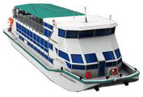

Банкетный теплоход
КолесовЪ
Официальный сайт

Новейший колесный теплоход "Колесовьгод
постройки 2014
Технические характеристики: длина 36 м, ширина 10 м, осадка 0.8 м, пассажировместимость - до
250 гостей.
Наши преимущества:
Уникальний колесный ТЕПЛОХОД.Новейшее оригинальное судно постройки 2014 года. Теплоход
идеально подходит для проведения банкетов,празников,свадеб,дней рождения,тимбилдинга,
деловиых встреч,семинаров,корпоративных идругих мероприятий.Новейшие разработки
российских судостроителей позволяют нам говорить о высокой экологичности нашего
банкетохода.Отсутсвие вибрации и пониженная шумность позволяют ощутить комфорт сaмым
требовательным гостям.
Колесовь - второе судно этого проекта.Первое судно было построено и успешно
эксплуатируется с 2011 года на российских реках.